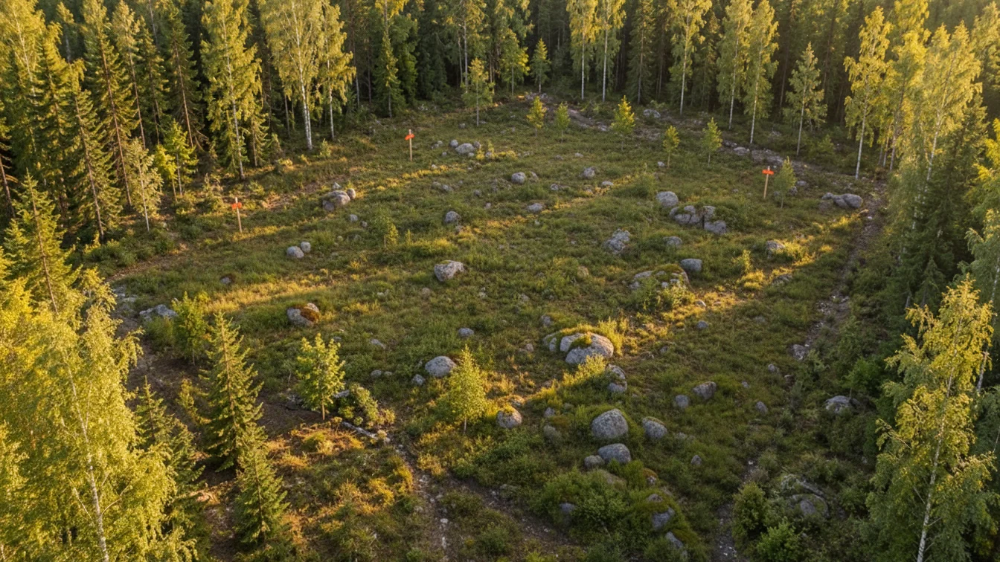
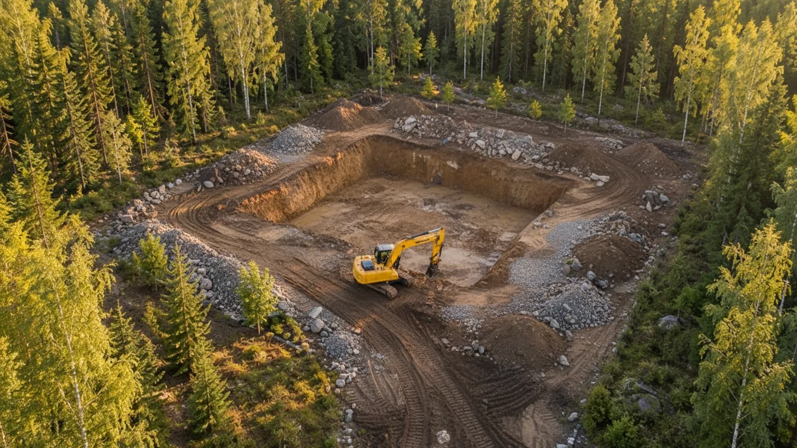
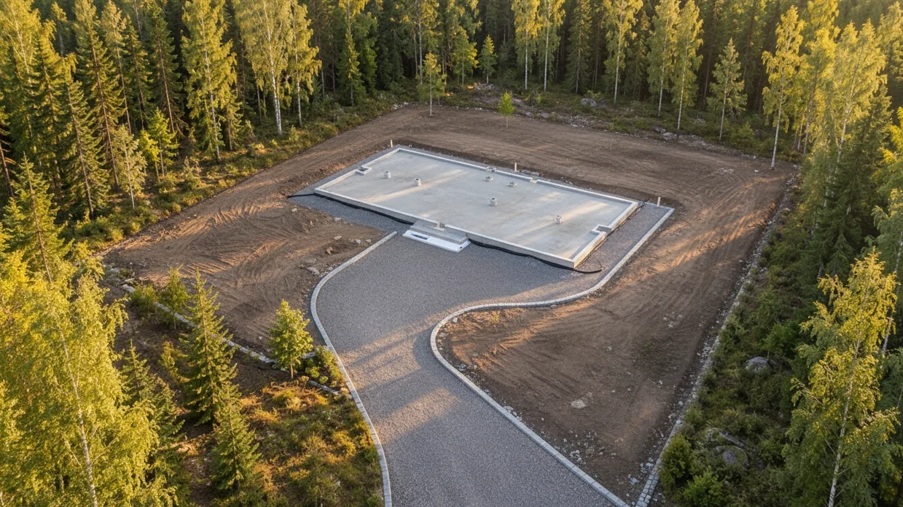
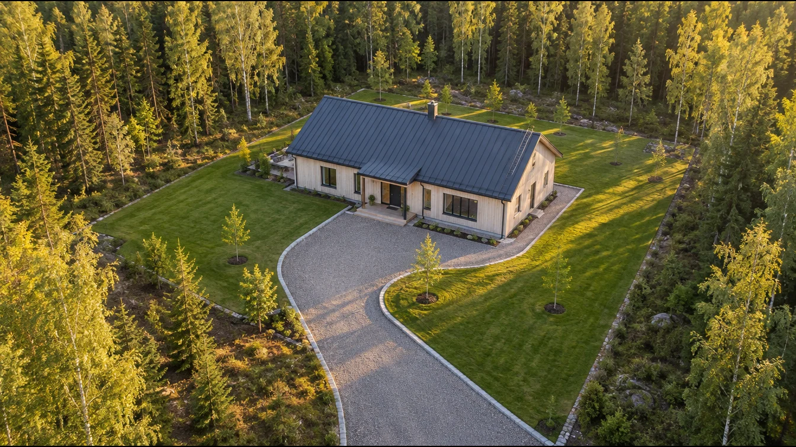
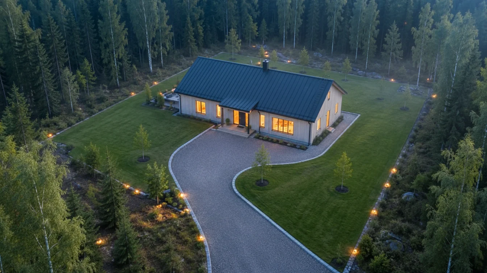
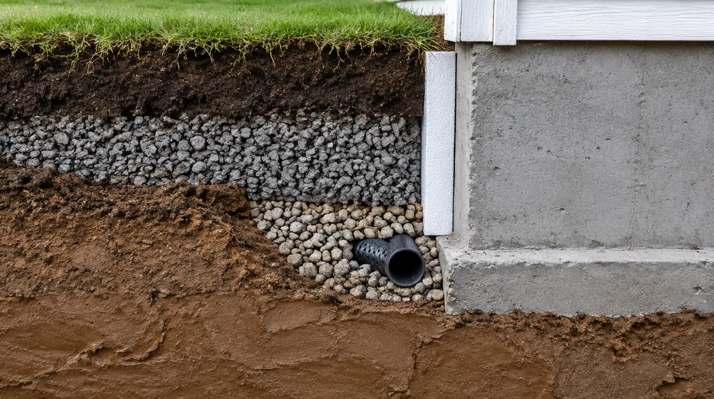
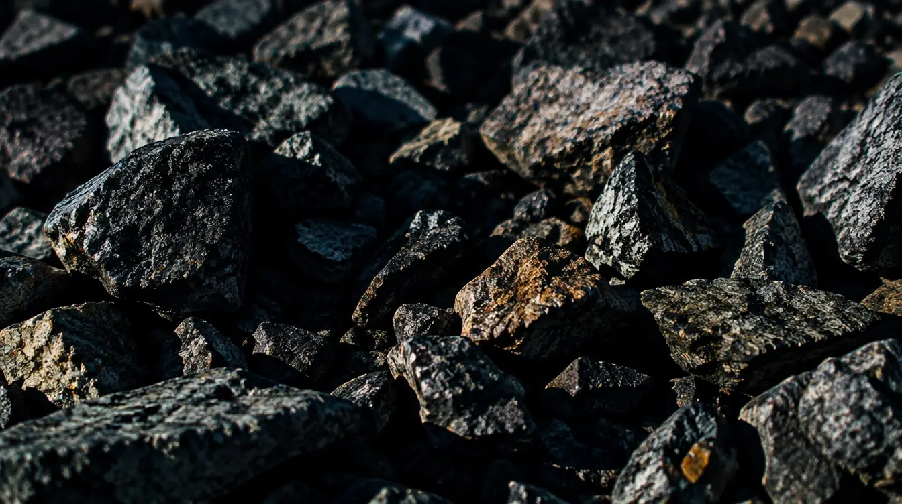
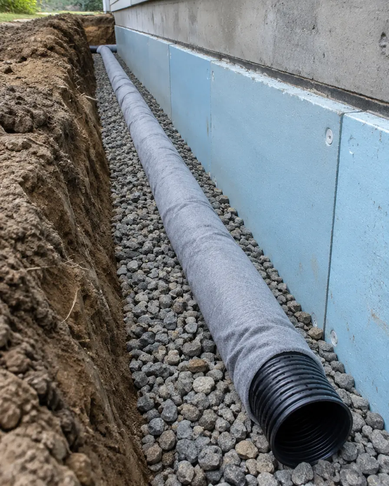
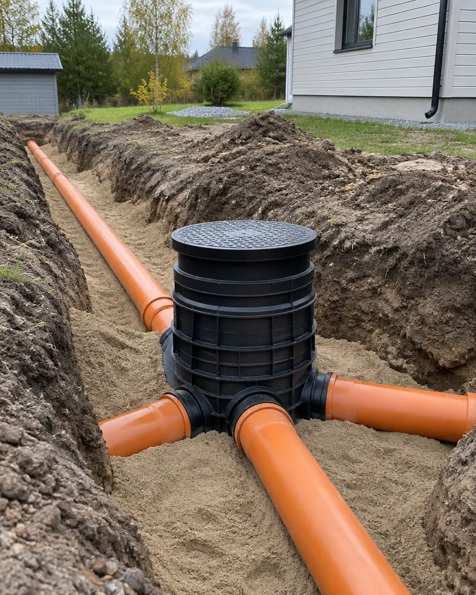
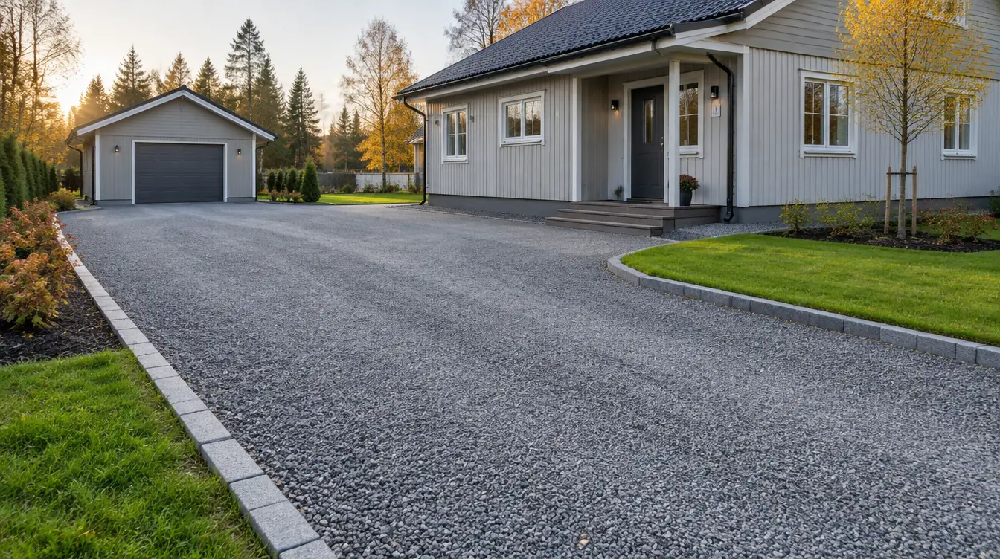

Pohja kuntoon. Kerralla.
Salaojat, routaeristykset, viemärit ja pihat omakotitaloihin. Vieritä alas ja katso, miten tyhjästä tontista tulee koti.
Kaivu.
Pohja kaivetaan oikeaan syvyyteen. Pintamaa talteen, savi pois, kantava maa esiin.
Pohja ja salaojat.
Murske, routaeristys ja salaojat tehdään ennen kuin talo nousee. Myöhemmin niihin ei enää pääse käsiksi.
Talo nousee.
Kun pohja kantaa ja vesi pysyy poissa, talo pysyy suorana ja kuivana vuosikymmeniä.
Koti.
Pihatie, nurmikko ja valot paikoillaan. Me hoidamme kaiken maan alla, jotta te voitte nauttia siitä, mikä on päällä.
Pyydä katselmus →- Omat koneetKaivinkone ja dumpperi
- UrakkahintaKiinteä hinta katselmuksen jälkeen
- KotitalousvähennysKorjaustöistä työn osuudesta
- Piha takaisinTäyttö, tiivistys ja siistiminen
Kaikki maan alla.
Teemme omakotitalojen maatyöt alusta loppuun. Hinnat ovat esimerkkejä, sisältävät arvonlisäveron ja tarkentuvat katselmuksessa.
- 01
Salaojien uusiminen
Vanhat salaojat pois, uudet putket pestyyn sepeliin ja tarkastuskaivot kulmiin. Kuvaamme vanhat linjat ensin.
Esim. 9 000–16 000 € / talo - 02
Sokkelin routaeristys
Eristelevyt sokkelin viereen ja vaakaan, ettei routa nosta perustuksia. Tehdään usein salaojien kanssa.
Esim. 25–45 €/m - 03
Viemärit ja vesijohdot
Tonttiviemärit, sadevesijärjestelmät ja vesijohdot tontin rajaan asti. Liitokset sovitaan vesilaitoksen kanssa.
Esim. alk. 3 500 € - 04
Perustusten pohjat
Pohjan kaivu, kantava murske ja tiivistys uudelle talolle, autotallille tai pihasaunalle.
Tarjouksen mukaan - 05
Pihatiet ja kivetysten pohjat
Routimaton rakenne, oikeat kaadot ja tiivistetty murske. Pinta pysyy suorana vuosia.
Esim. 35–60 €/m² - 06
Kaivinkonetyöt
Kantojen poisto, ojat, maansiirrot ja pienet kaivuut tuntityönä. Kone ja kuljettaja samalla laskulla.
Esim. 85–110 €/h
Mitä talosi vierellä on?
Vedä kauhaa alaspäin ja kaiva kerros kerrokselta sokkelin viereen. Jokaisessa kerroksessa näet, mikä työ siihen liittyy ja mitä se tyypillisesti maksaa.

0,1 m Vedä alaspäin ↓0–0,1 m
Nurmi
Syvyydet ja hinnat ovat esimerkkejä. Oikea rakenne selviää katselmuksessa ja tarvittaessa kuvaamalla vanhat putket.
Paljonko salaojaremontti maksaa?
Säädä talon ympärysmitta ja kaivusyvyys. Näet työn ja tarvikkeiden osuuden ja arvion kotitalousvähennyksestä.
Esimerkki: 10 × 14 metrin talon ympärysmitta on 48 m.
Kaivusyvyys
Lisätyöt
Talo
Esimerkkihinta
15 340 €
- Työ6 410 €
- Koneet3 570 €
- Putket, kaivot, sepeli ja levyt5 360 €
Vähennys on 40 % työn osuudesta, omavastuu 150 € ja enintään 2 100 € henkilöä kohden vuonna 2026. Puolisot voivat hakea kumpikin. Uudisrakentamisessa vähennystä ei saa. Arvio on varovainen: se lasketaan vain työn osuudesta ilman koneita. Hinnat ovat esimerkkejä.
Pyydä katselmus →
Pohja kantaa.
Vuosikymmeniä.
Oikea murske, oikeat kaadot ja tiivistys kerros kerrallaan. Siksi pihatie ei painu eikä sokkeli kastu.
Tyypillisiä kohteita.
Esimerkit ovat kuvitteellisia. Hinnat ovat suuntaa antavia ennen kotitalousvähennystä.

EsimerkkiSalaojat1970-luvun omakotitalo
Noin 48 m salaojaa ja routaeristys koko talon ympäri, neljä tarkastuskaivoa ja sadevedet omaan linjaan.
noin 2 viikkoanoin 15 000 €
EsimerkkiViemäriTonttiviemärin uusiminen
Vanha betoniviemäri vaihdettu muoviputkeen tontin rajaan asti, uusi tarkastuskaivo talon nurkalle.
noin 3 päiväänoin 5 500 €
EsimerkkiPihatiePihatie uusiksi
Noin 120 m² vanhaa pohjaa pois, suodatinkangas, kantava murske, reunakivet ja pintasora.
noin 4 päiväänoin 6 000 €
Neljä askelta.
Katselmus on maksuton Keski-Uudellamaalla. Kerro osoite ja mikä huolettaa.
- 01
Yhteydenotto
Lomake tai puhelu. Kuvat sokkelista ja pihasta auttavat.
- 02
Katselmus
Tulemme paikalle, mittaamme ja kuvaamme tarvittaessa putket.
- 03
Urakkatarjous
Kiinteä hinta, aloituspäivä ja työn kesto kirjallisena.
- 04
Työmaa
Valmiin työn katselmus yhdessä. Laskussa työn osuus eriteltynä vähennystä varten.
Usein kysyttyä.
Saako salaojaremontista kotitalousvähennyksen?
Kyllä, kun kyse on olemassa olevan omakotitalon piha-alueella tehtävästä korjaus- tai perusparannustyöstä. Vähennys lasketaan vain työn osuudesta, ja erittelemme sen laskuun. Uudisrakentamisen yhteydessä tehdyistä töistä vähennystä ei saa.
Mistä tiedän, että salaojat pitää uusia?
Tyypillisiä merkkejä ovat kostea sokkeli, kellarin kosteus tai haju ja vesilammikot talon vierellä. Vanhoissa taloissa salaojat voivat olla tukossa tai puuttua kokonaan. Kuvaamme putket kameralla ennen kuin annamme tarjouksen.
Voiko maata kaivaa talvella?
Voi, mutta routa hidastaa työtä ja nostaa hintaa. Salaojaremontit kannattaa tehdä sulan maan aikaan, yleensä keväästä syksyyn. Talvella ehdimme hyvin tehdä katselmuksen ja tarjouksen.
Tarvitaanko lupaa?
Salaojien uusiminen ei yleensä vaadi rakennuslupaa. Viemäreihin ja vesijohtoihin liittyvät työt sovitaan kuitenkin vesilaitoksen kanssa, ja käytännöt vaihtelevat kunnittain. Tarkistamme tarvittaessa kunnan rakennusvalvonnasta ennen töitä.
Mitä pihalleni jää töiden jälkeen?
Täytämme kaivannot, tiivistämme ja palautamme pinnan sovitusti. Nurmikko kylvetään tai siihen asennetaan valmisnurmi, kivetykset ladotaan takaisin.
Pyydä katselmus.
Kerro osoite ja mikä huolettaa. Vastaamme saman arkipäivän aikana.
- Puhelin045 000 0000
- Sähköpostihei@routa.example
- ToimialueTuusula, Kerava, Järvenpää, Vantaa ja Nurmijärvi
- TyöajatMa–pe 7–17